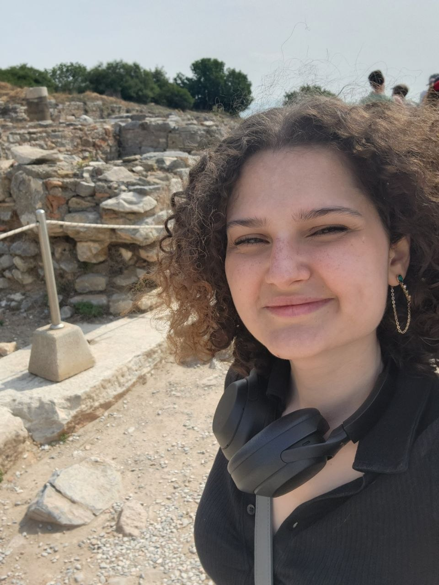

|
 |
Giovanna Kobus ConradoI was born in the great city of Campo Grande, in the middle of Brazil. I've always enjoyed math, and stumbled into computer science somewhat at random when it was time to choose my undergrad. I quickly fell in love with the world of algorithms, problem solving, and not understanding things. I am incredibly happy with what I do, where I live, and the people I get to work with. Being able to make a living doing research is truly a dream come true. During my undergrad I was an active competitive programmer; me and my team got first place in LATAM in 2019, and went to the ICPC world finals in 2021. Nowadays, I am an active problem setter, mostly for Latin American competitions. I am also a proud coach for the competitive programming teams of Aarhus University. Personally, I enjoy videogames, board games, making cool tikz pictures, and bugs. I like collecting bug figurines and drawing them sometimes. I also have a bugstagram where I post pictures of critters I find around the places I visit. |
{kind=link}
{kind=link}